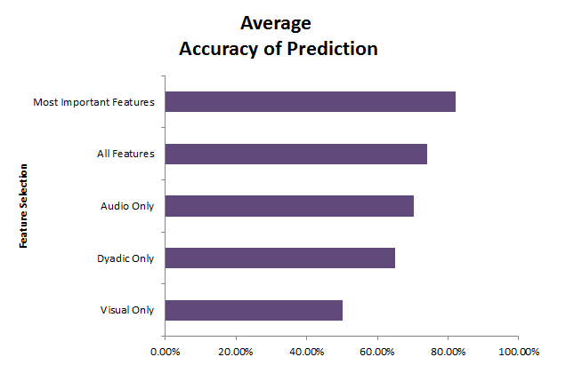

Week 8 - 07.14.14 - 07.18.14
I'm continuing to do pre-processing on the data to raise the accuracy of my classifier. I used a libsvm tool, fselect.py for feature selection. This Python script takes the entire training set as input and calculates the f-score in order to find which features yield the highest prediction accuracy.
I split the data up into 3 categories:
- Audio Features Only
- Visual Features Only
- Dyadic Features Only
After performing the feature selection and only training on the most important features, the accuracy raised to 82%! I created a little chart to show the difference in accuracy when training my classifier on using the different feature sets:

The "Most Important Features" data set is a combination of the most important audio features, visual features, and dyadic features. These accuracy results show that multimodal data yields a more accurate prediction of friendship than just audio or visual data alone.
WEEK 8 READING LIST:
Bevacqua, E., De Sevin, E., Hyniewska, S. J., & Pelachaud, C. (2012). A listener model: introducing personality traits. Journal on Multimodal User Interfaces, 6(1-2), 27-38.
Demeure, V., Niewiadomski, R., & Pelachaud, C. (2011). How is believability of a virtual agent related to warmth, competence, personification, and embodiment?. Presence: Teleoperators and Virtual Environments, 20(5), 431-448.
Pelachaud, C. (2009). Studies on gesture expressivity for a virtual agent. Speech Communication, 51(7), 630-639.
Schroder, M., Bevacqua, E., Cowie, R., Eyben, F., Gunes, H., Heylen, D., ... & Wollmer, M. (2012). Building autonomous sensitive artificial listeners. Affective Computing, IEEE Transactions on, 3(2), 165-183.